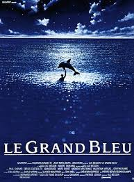
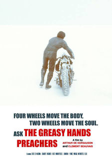

My favorite movies
|  |
Le Grand BlueLe Grand Bleu est un film dramatique franco-italo-américain coécrit, coproduit et réalisé par Luc Besson, sorti en 1988. Le film est librement inspiré des vies de Jacques Mayol et Enzo Maiorca, célèbres champions de plongée en apnée. |

|
Pulp FictionPulp Fiction, ou Fiction pulpeuse au Québec, est un film de gangsters américain réalisé par Quentin Tarantino et sorti en 1994. Le scénario est co-écrit par Tarantino et Roger Avary. Utilisant la technique de narration non linéaire, il entremêle plusieurs histoires ayant pour protagonistes des membres de la pègre de Los Angeles et se distingue par ses dialogues stylisés, son mélange de violence et d'humour et ses nombreuses références à la culture populaire. |
|  |
Greasy Hands PreachersAmoureux de la deux-roues, Clément Beauvais et Arthur de Kersauson se sont immiscés dans le quotidien de passionnés de custom. Avec leur nouveau film, ils nous font redécouvrir la satisfaction longtemps perdue du travail manuel. Et un sentiment immense de liberté. |